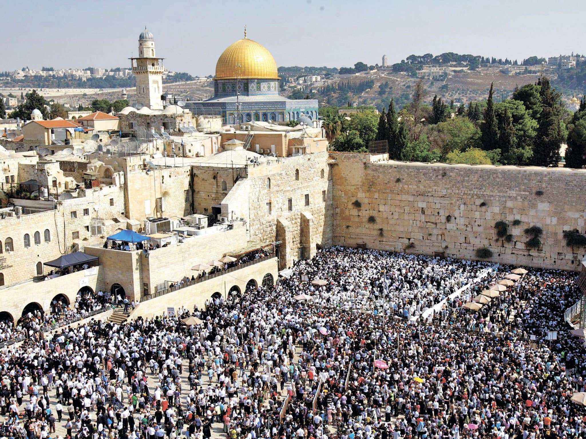
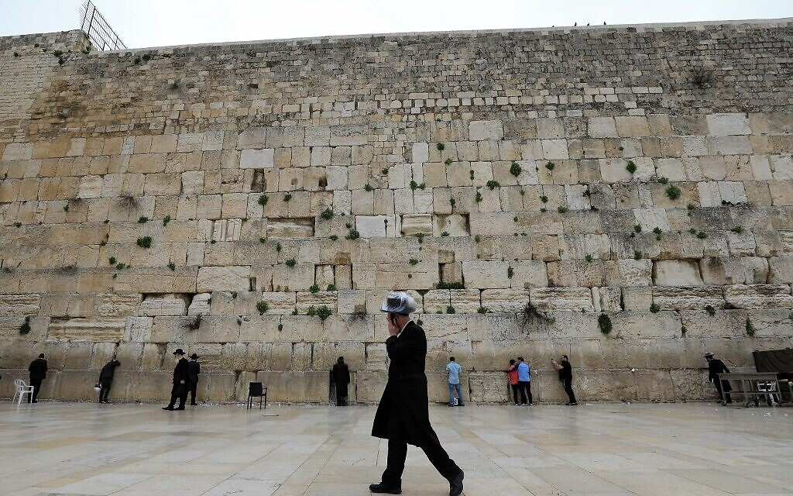

|
 |  |
The Western Wall (sometimes called the Wailing Wall, or the Kotel, the Hebrew word for wall) is one of the last remaining walls of the Temple Mount,
the elevated plaza in the Old City of Jerusalem that was the site of both ancient Jewish temples.
It is the holiest site in Judaism and a place of pilgrimage and prayer.
The holiness of the Western Wall derives from its proximity to the location where the ancient temples once stood and which today houses the Al Aqsa Mosque and the iconic gold-topped Dome of the Rock, the third holiest site in Islam, from which Muhammad is believed to have ascended to heaven. After the Second Temple was destroyed in by the Romans in 70 CE, the Western Wall became the closest Jews could come to the place where the Temple once stood. Opposite the wall is a large open plaza that leads into a gender-segregated place for prayer. Many have the custom of writing prayers on pieces of paper and placing them inside crevices of the wall.